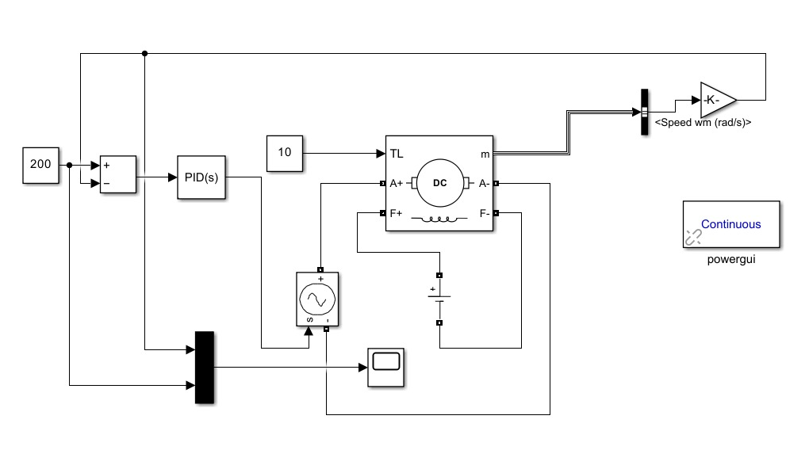
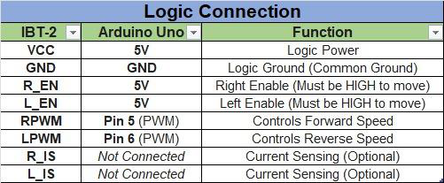
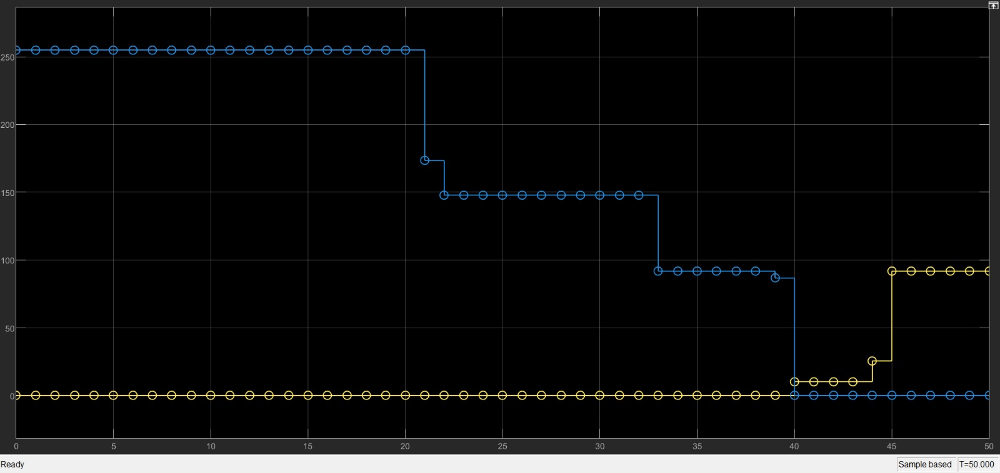
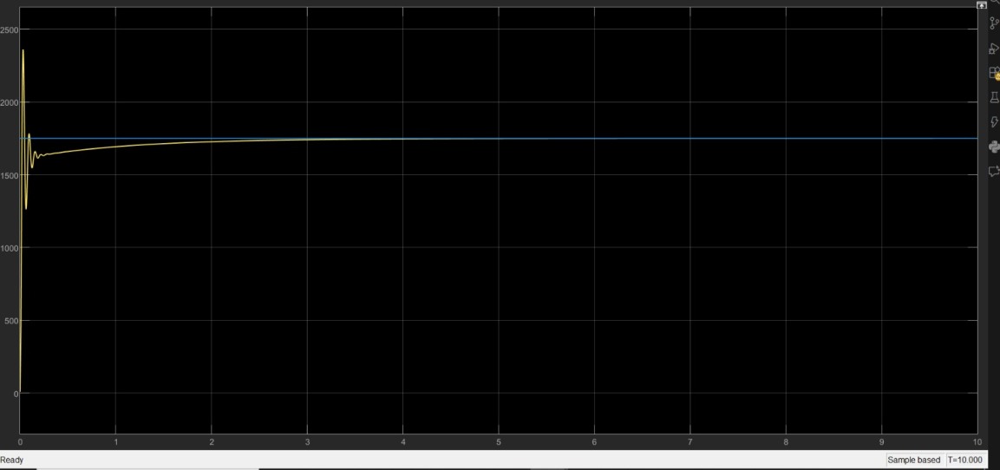
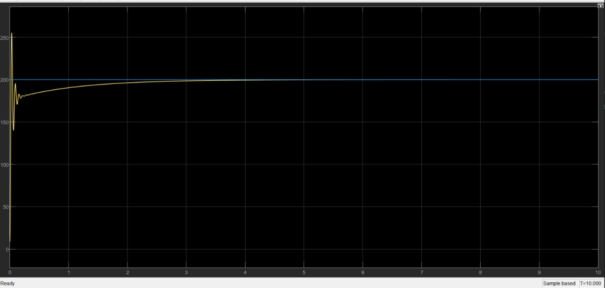

DC Motor Speed Control Without Encoder
0steady‑state error in simulation


Key finding
With no encoder, the motor runs open loop on Arduino PWM, and the derived transfer function and Simulink model show PID removing steady‑state error in simulation.
- Domain
- Controls and mechatronics
- Year
- 2025
- Team
- Team of 5
- Course
- ME‑464 System Dynamics and Control
- Tools
- Arduino
- Simulink
- MATLAB
- IBT‑2
- Result
- Simulated PID settles at the setpoint with no steady‑state error
Summary
What
Open‑loop PWM motor drive on an Arduino, a derived motor model, and a simulated PID comparison in Simulink.
Key finding
With no encoder, the motor runs open loop on Arduino PWM, and the derived transfer function and Simulink model show PID removing steady‑state error in simulation.
Results
- Hardware: Arduino UNO, IBT‑2 driver and a 5 V DC motor, with PWM on pins 5 and 6 and no encoder.
- Motor ODEs and a transfer function from voltage to speed derived.
- PID control exists in simulation only.
Problem
Design, model and test a low‑cost DC motor speed controller without an encoder. Open‑loop PWM sets the speed, and the study points to supply and load sensitivity as the limit of open‑loop control.
Method
- Hardware: Arduino UNO PWM outputs on pins 5 and 6 into an IBT‑2 driver, a 5 V DC motor, a breadboard and a common ground, built from lab components at no extra cost.
- Model: coupled electrical and mechanical ODEs, then a Laplace transform to a transfer function from input voltage to speed, with torque proportional to current and back EMF proportional to speed.
- Simulink open‑loop model using Arduino support blocks, then a closed‑loop model with a PID controller added for simulation only.




Equations
- EQ. 1
- EQ. 2
- EQ. 3
- EQ. 4
- EQ. 5
Results
The open‑loop Simulink scope shows a transient followed by a steady trend for the chosen PWM command. In the simulated PID response, speed first overshoots, then settles at the setpoint with steady‑state error removed.






Limitations
- The PID controller exists only in simulation, and the hardware has no feedback or encoder.
- No motor parameter values, response times or measured speeds are given.
- Linear model that ignores friction variation, saturation and supply variation.
Tools
- Arduino
- Simulink
- MATLAB
- IBT‑2